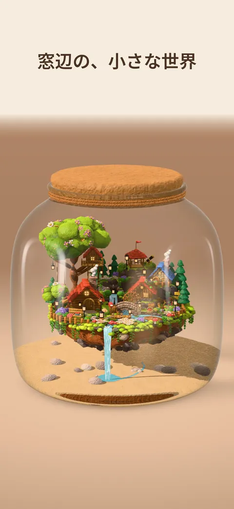
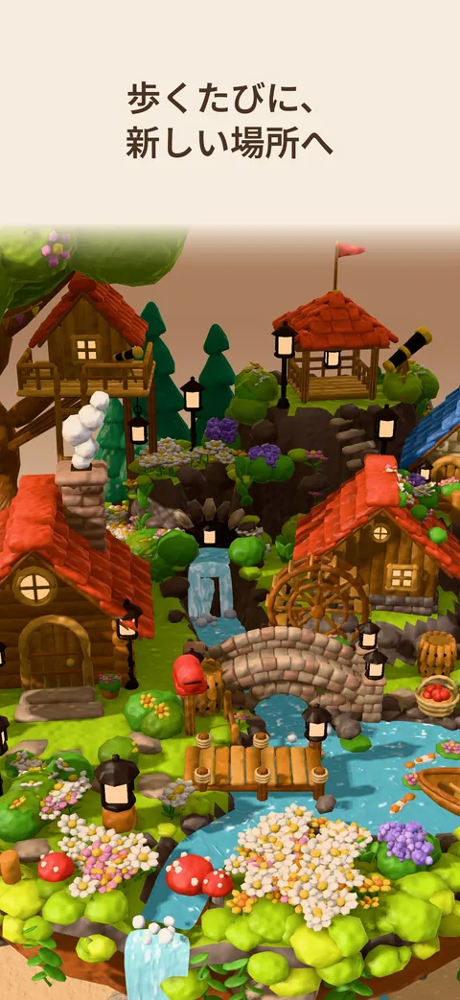
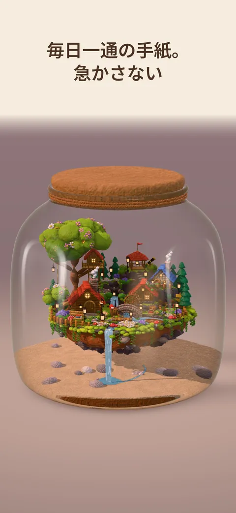
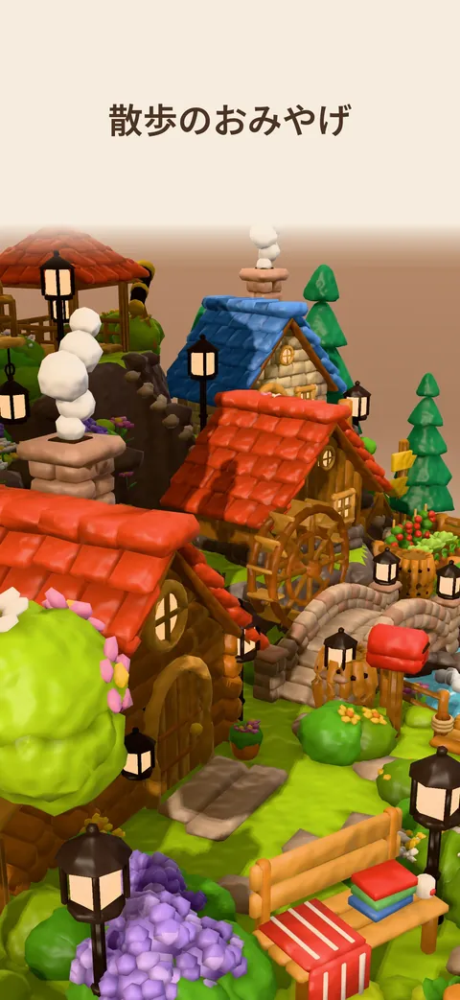
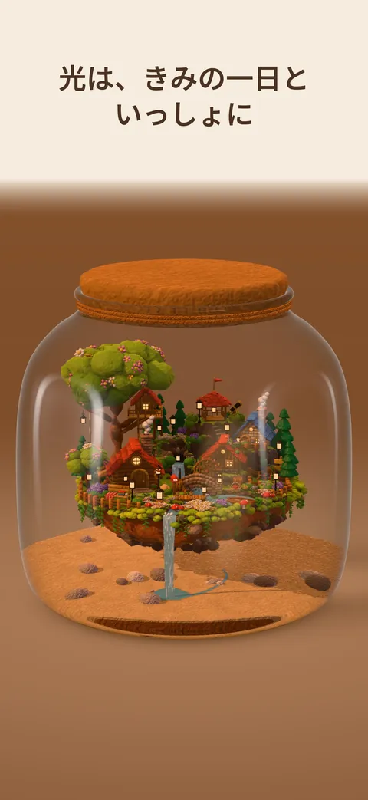
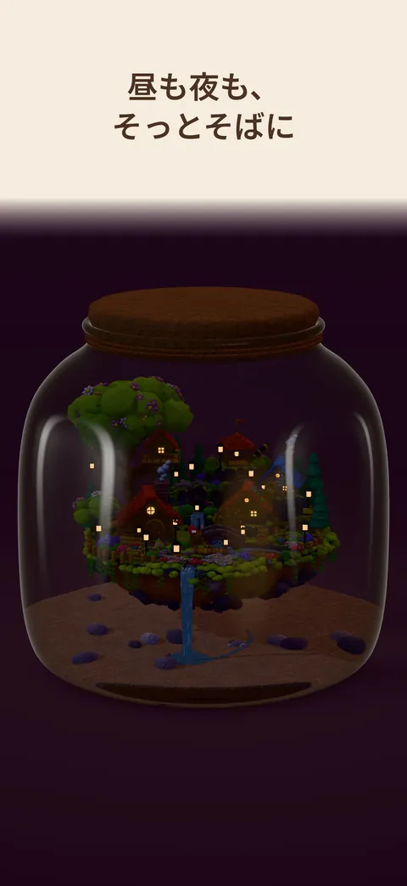

きみの散歩が、あの子の散歩に
許可してもらえれば、「ヘルスケア」から歩数を読み取ります。スノードームの小道が毎日少しずつのびて、新しい草花や場所があらわれます。
小さな友だちが住んでいます。きみが歩けばいっしょに歩き、休めばいっしょに休み、びんのそばに小さな贈りものを置いていきます。
Ashling はきみの iPhone の中だけで暮らします。スクロールするフィードも、追いかけるものもありません。静かな時間がほしいときに開いて、また一日を続けましょう。
許可してもらえれば、「ヘルスケア」から歩数を読み取ります。スノードームの小道が毎日少しずつのびて、新しい草花や場所があらわれます。
3日目に砂時計があらわれます。集中するたびに小さなキャラバンが砂漠を進み、色とりどりの砂を持ち帰ります。連続記録はありません。
あの子は短い手紙を書き、びんのそばにインスタント写真を置いていきます。小さなアルバムにしまっておけます。
びんの中の朝、昼、夕方、夜は本当の時刻と同じ。夜になると窓に灯りがともり、島も眠りにつきます。
あの子に帽子を選んであげたり、びんのインスタント写真を撮ってワンタップで共有したり。
ホーム画面のウィジェット、ロック画面の集中ライブアクティビティ、ベッドのそばの StandBy ナイトライト。
スワイプしてもっと見る






Ashling はダウンロード無料。2つの追加アイテムは買い切りで、サブスクリプションではありません。
アカウントも、サーバーも、広告も、分析ツールもありません。歩数は iPhone の中で読み取られ、外に出ることはありません。このサイトにもトラッカーや Cookie はありません。
いいえ。ダウンロード無料で、砂時計と苔のふたは買い切りです。新しい iPhone では「購入を復元」で戻せます。
いりません。サインインもサーバーもなく、すべて iPhone の中に残ります。
許可してもらえれば、「ヘルスケア」から一日の歩数だけを読み取り、あの子が歩く距離を決めます。ヘルスケアに書き込むことはなく、歩数が端末の外に出ることもありません。許可しなくても使えます。
何も悪いことは起きません。あの子が病気になったり悲しんだりすることも、何かを失うこともありません。島はただ待っています。
公開時は iPhone のみです。
2027年春に App Store で公開予定です（iOS 17 以降の iPhone）。公開日には、このページからダウンロードできるようになります。
Ashling
App Store で近日公開2027年春 · iPhone